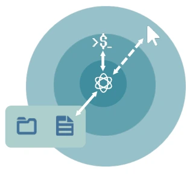
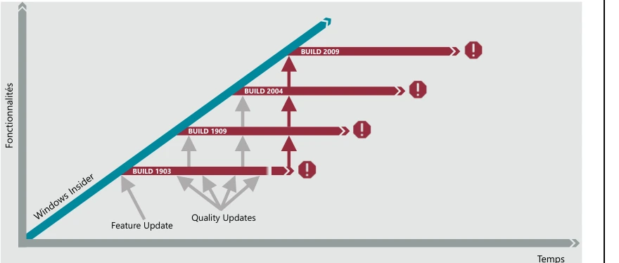
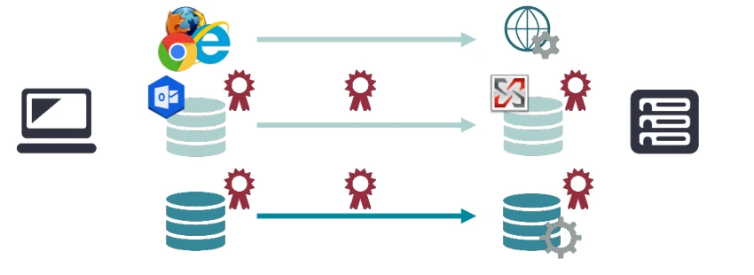

Transcription du document de formation. Les paragraphes, listes, tableaux et visuels isolés suivent l’ordre du document ; les aides pédagogiques sont séparées.
Un système d’exploitation […] ou Operating System (OS) est un logiciel qui […] pilote les dispositifs matériels et reçoit des instructions de l’utilisateur ou d’autres logiciels (ou applications). […]
Le schéma associe Utilisateur, Logiciel, Système d’exploitation et Ressources matérielles : CPU, RAM, stockage, réseau.
Sources citées dans le support : - https://www.futura-sciences.com/tech/definitions/informatique-systeme-exploitation-11820/ - https://www.journaldunet.fr/web-tech/dictionnaire-du-webmastering/1203371-systeme-d-exploitation-definition-traduction-et-acteurs/
Sources citées pour les fonctions et la composition : - https://www.futura-sciences.com/tech/definitions/informatique-systeme-exploitation-11820/ - https://www.journaldunet.fr/web-tech/dictionnaire-du-webmastering/1203371-systeme-d-exploitation-definition-traduction-et-acteurs/

La planche de logos montre BlackBerry, Red Hat, Debian, Ubuntu, Windows, Android, OS X et iOS, avec la mention « …et des centaines d’autres… ».
| Date représentée | Système |
|---|---|
| Août 1981 | MS-DOS |
| Novembre 1985 | Win1 — Windows 1 |
| Juillet 1993 | WinNT — Windows NT |
| Août 1995 | Win95 — Windows 95 |
| Juin 1998 | Win98 — Windows 98 |
| Février 2000 | Win2000 — Windows 2000 |
| Octobre 2001 | WinXP — Windows XP |
| Janvier 2007 | Windows Vista |
| Octobre 2009 | Win7 — Windows 7 |
| Octobre 2012 | Win8 — Windows 8 |
| Juillet 2015 | Win10 — Windows 10 |
| Système | Date de sortie | Fin des ventes | Fin du support standard | Fin du support étendu |
|---|---|---|---|---|
| XP | Octobre 2001 | Juin 2008 | Avril 2009 | Avril 2014 |
| Vista | Janvier 2007 | Octobre 2011 | Avril 2012 | Avril 2017 |
| 7 | Octobre 2009 | Octobre 2013 | Janvier 2015 | Janvier 2020 |
| 8 | Octobre 2012 | Octobre 2016 | Janvier 2018 | Janvier 2023 |
| 10 | Juillet 2015 | * | * | * |
Note : chaque build Windows 10 possède sa date de fin de support.
| Vocabulaire | Définition du support |
|---|---|
| KB | Knowledge Base : correctif de sécurité ou de fonctionnalité. |
| SP | Service Pack : ensemble de KB. |
| Release | MAJ majeure de l’OS ; exemple : Windows 8.1. |
| Vocabulaire | Définition du support |
|---|---|
| Windows Insider | Communauté d’utilisateurs bêta-testeurs de Windows 10. |
| Build | Version de Windows 10 identifiée par un numéro, par exemple 1903 pour mars 2019 ; propose son lot de fonctionnalités ; support de 18 mois. |
| Feature updates | Mise à disposition d’une nouvelle build ; deux par an, majeure au printemps et mineure à l’automne. |
| Quality updates | Mise à jour de qualité : patch de sécurité et correctifs de bogues ; tous les deuxièmes mardis du mois, le Patch Tuesday. |
Le diagramme place les builds 1903, 1909, 2004 et 2009 sur les axes Temps et Fonctionnalités. Les flèches Feature Update marquent un passage de build ; les Quality Updates jalonnent la vie d’une build.

| Famille | Professionnelle | Entreprise |
|---|---|---|
| Destinée exclusivement à un usage domestique. Cortana, bureaux supplémentaires, OneDrive, Edge… | Intégration à une infrastructure Microsoft : jonction au domaine, traitement des GPO, chiffrement EFS, BitLocker et BitLocker To Go, démarrage natif sur VHD. | Fonctions supplémentaires représentées : AppLocker, Windows To Go, DirectAccess, BranchCache. |
| Type | Sigle développé | Définition du support |
|---|---|---|
| OEM | Original Equipment Manufacturer | Préinstallée, liée à la machine. |
| Retail | Vente au détail, boîte ou version numérique | Licence liée à l’utilisateur, s’installe sur un poste. |
| MAK | Multiple Activation Key | Une licence pour plusieurs postes clients. |
| VLK | Volume Licence Key | Pour déployer les systèmes clients. Nécessite le service KMS (Key Manager Service) et plus de 25 postes. |
| CAL | Client Access Licence | Licence permettant au client de solliciter le service d’un serveur Microsoft. |
Le schéma associe des applications et postes clients à des services Web, de messagerie et de données de serveurs Microsoft.
https://www.microsoft.com/fr-fr/Licensing/product-licensing/client-access-license.aspx
